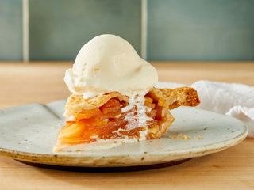

Apple Pie

Description
This is not my recipe for my favorite dessert, apple pie.
The original recipe is linked here.
Ingredients
- 1 recipe pastry for a 9-inch double crust pie
- 1/2 cup unsalted butter
- 3 tablespoons all-purpose flour
- 1/4 cup water
- 1/2 cup white sugar
- 1/2 cup packed brown sugar
- 8 Granny Smith apples - peeled, cored, and sliced
- 1 teaspoon ground cinnamon
- 1/4 teaspoon ground nutmeg
- 1 tablespoon lemon juice
Steps
- Preheat oven to 425 degrees F (220 degrees C).
- Melt the butter in a saucepan. Stir in flour to form a paste. Add water, white sugar, and brown sugar, and
bring to a boil. Reduce temperature and let simmer.
- Place the bottom crust in your pan. Fill with apples, mounded slightly. Pour the sugar and butter liquid
over the apples. Cover with a lattice work crust.
- Bake 15 minutes in the preheated oven. Reduce the temperature to 350 degrees F (175 degrees C). Continue
baking for 35 to 45 minutes, until apples are soft.